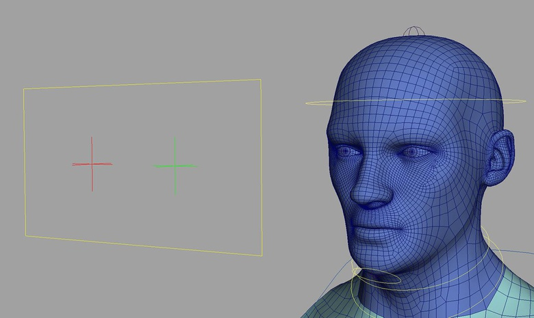
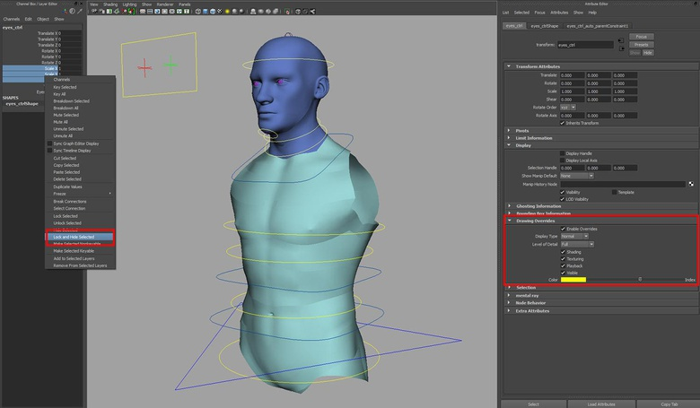

Introduction to rigging in Maya - Part 3 - Rigging the neck and head

Previous chapters
In this free Maya rigging tutorial, Jahirul Amin will focus on creating the rig for the neck and the head. Plus! Free video tutorial included!
Free resources: A Maya directory (3dt_rigging) has been supplied containing all scene files and scripts used in this project. Download your free resources to follow along.
Following on from the torso, this time we will create the rig for the neck and the head. The cervical region of a real spine (the neck bones) are made up 7 vertebrae, and like we did with the lumbar and thoracic regions, we will simplify this in CG to make it more manageable for the animator. I like to give the animator 2 controls for the neck: one at the base of the neck and one between the base and the atlas bone, which is where the spine meets the cranium. This usually allows for enough flexibility, but again, feel free to experiment; nothing is set in stone here, so if you want more or even less control, then make the required changes.
Video
Moving on from the neck, we will add the head, jaw and eye joints and controls. The head and jaw, like the neck, will be FK based but we will also add some space-switching flexibility into the rig. Space-switching allows the animator to decide which part of the body part a particular region should follow. For example, should the head orient with the neck, the torso or none at all? By adding space-switching into the rig, we can create some very interesting and sometimes creepy results. When we add this feature to the eyes, you'll see what I mean!
Before we crack on, just a quick note that I forgot to mention last time. Currently we are setting rotate X to drive flexion/extension for all the joints. This will cause the length of the joints to be determined by the translate Y attribute, not the translate X. This is no problem but I thought I would just make you aware.
So, let's pop some joints into place.
Creating the neck, head and jaw joints
In the side view, go Skeleton > Joint Tool. We are going to snap the start of the neck joint chain to the end of our spine chain. To do this, hold down the V key on the keyboard (point snapping) and click close to the end of the spine joint but not on it. Once you have the first joint in place, let go of the V key and create a joint in the middle of the neck and then at the base of the head. Still in the tool, hold down the Shift key and create a final joint at the tip of the head. Rename these joints from root to tip as follows: neckA_jnt, neckB_jnt, head_jnt and headEnd_jnt. Now we need to orient the joints so positive X rotation creates flexion. To do this, select neckA_jnt and go Skeleton > Orient Joint Tool (Options). Set the Primary Axis to Y, the Secondary Axis to X and the Secondary Axis World Orientation to X. Hit apply and then test out the results.
Now cometh the jaw joint. Back in the side view, create a 3-joint jaw chain starting from just in front and below the ear, then at the corner of the jaw and finally at the chin. We could create a 2-joint chain going from the ear region to the chin. I just pop the extra joint in as I like it to visually resemble a real jaw. Rename the joints: jawA_Jnt, jawB_jnt and jawEnd_jnt. Select jawA_jnt and go Skeleton > Orient Joint Tool using the same settings as before. Lastly, parent jawA_jnt under head_jnt.
Next come the eye joints. Currently, the geometry of the eyeballs is slightly off center. To make it easier to set up the eye controls, I decided to straighten them up by rotating the geometry in the Y-axis. Then, with the eyeball geometry selected, go Modify > Freeze Transforms. Now create a polygon sphere and translate, rotate and scale the sphere to sit on top the original eye geometry. This can act as our proxy geometry and will also be helpful when placing the joints. Rename the newly created sphere l_eyeball_proxy. Open up the Attribute Editor and in the left-most tab, go Display and turn on Display Handle. We can now use the display handle to snap from the center of the sphere outwards. So activate the Joint Tool, hold down the V key (to enable point snapping) and create a joint from the center of the eyeball geometry ending at the front tip of the eye. Rename the joint l_eye_jnt and l_eyeEnd_jnt. Duplicate l_eyeball_proxy and l_eye_jnt and then pop a minus in front of the value in the Translate X channel. This will create the right side. Rename the geometry and joints r_ instead of l_. Select both l_eye_jnt and r-eye jnt and go Skeleton > Orient Joint Tool (Options), turn on Orient Joint to World and hit Apply (I do this later on in the video, during step 4). Lastly, parent l_eye_jnt and r_eye_jnt under head_jnt.
Creating the joints for the neck, head, jaw and eyes
Creating the low-res mesh
We now need to chop up the mesh and parent it to the relevant joints. I won't go into detail here, as it is the same process I employed to create the low-res mesh for the torso. But I will mention that I deleted the inner cavity of the eyes and the mouth to keep things slightly lighter on the rig. Make sure to also rename the chopped up geometry using the same naming convention that we used for the torso geometry. You can also parent a couple of spheres under each eye joint and again, make sure to rename them appropriately.
Chopping up the model and parenting it under the relevant joint
Create the neck and head controls
We'll add the controls for the neck, head and jaw joints now. So, select neckA_jnt, neckB_jnt, head_jnt, jawA_jnt and open up the createControls.py script in the Script Editor. Make sure the final line reads as:
cmds.orientConstraint(ctrl, s, mo=0)
and then Execute the script.
Now let's create the control hierarchy. Select jawA_ctrl_offset and parent it under head_ctrl. Next parent head_ctrl_offset under neckB_ctrl and then parent neckA_ctrl_offset under neckA_ctrl_offset. Lastly, point constrain neckA_jnt to neckA_ctrl and then parent neckA_ctrl_offset under chest_IK_ctrl.
To edit the shape of the controls and make them more easily selectable, go into component mode by hitting F8 on the keyboard. Select the CVs of the controls and scale and translate them to wrap around the geometry. A bit of tidying up is required now: select neckA_jnt, hit Ctrl+G and then rename that group head_jnt_grp. Select both head_jnt_grp and spine_jnt_grp and hit Ctrl+G. Rename the new group torso_jnt_grp.
Creating the controls for the neck, head and jaw
Creating the eye controls
For the eye controls, we are going to create a locator shape from a CV curve. To do this, pop into any orthographic view (I start in the Front view) and activate the CV Curve Tool with the Curve degree set to 1 Linear. Now turn on Grid snapping (or hold down the X key) and start drawing a cross. Stay in the tool, switch to the top view and continue to add a further 2 points to create what looks like a locator. Rename the shape l_eye_ctrl and then hit CTRL+G twice. Rename the top most group l_eye_ctrl_offset and the group below l_eye_ctrl_auto.
To position the control, select l_eye_ctrl_offset and parent it under l_eye_jnt. Once it pops into place, zero out the transformation values for the offset group and then hit Shift+P to un-parent it from the joint. Now pull the offset out in the Z-axis to pop it in front of the character. Select l_eye_ctrl_offset and hit Ctrl+D to duplicate it. Replace the l_ with an r_ for the control and the group nodes and then pop a minus in front of the Translate X value to get it to the other side.
Next, we'll create a control to carry both individual eye controls. Pop into the Front view and, using the CV Curve Tool, draw out a square shape. Rename it eyes_ctrl and then hit Ctrl+G twice to create the control hierarchy. Rename the top-most group eyes_ctrl_offset and the next group eyes_ctrl_auto. To get the control into place, select in this order; l_eye_ctrl, r_eye_ctrl and then eyes_ctrl_offset. Go Constrain > Point and the control hierarchy should snap into place. Now delete the PointConstraint node that lives under eyes_ctrl_offset. Edit the shape of the eyes_ctrl in component mode (F8) and then parent l_eyes_ctrl_offset and r_eyes_ctrl_offset under eyes_ctrl.
The last thing we want to do is set up the eye constraints. Select l_eye_ctrl, shift-select l_eye_jnt and go Constraints > Aim (Options). Set the Aim Vector to 0, 0, 1 and hit Apply. Do the same for the right eye and the character should be good to look around.
The eye controls in place
Eye follow setup
Start by creating 2 locators (Create > Locator) and rename them eyesHeadFollow_low and eyesWorldFollow_loc. Select both locators and parent them under eyes_ctrl. Zero out the Translation values to pop them into place and then hit Shift+P to un-parent them. Now parent eyesHeadFollow_loc under head_ctrl and leave eyesWorldFollow_loc where it is. Select in this order; eyesHeadFollow_loc, eyesWorldFollow_loc, eyes_ctrl_auto and go Constrain > Parent.
We are now going to add an attribute to the eyes_ctrl to allow us to set if the eyes should follow the head control or the world. Select eyes_Ctrl and go Modify > Add Attribute. Give it a Long name of eyesFollow and set the Data Type to Enum. Under the Enum Names, highlight Green and set the New name to Head and then highlight Blue and set the New name to World. Hit Add when ready. Now go Animate > Set Driven Key > Set. Select eyes_ctrl and hit Load Driver in the Set Driven Key window. Then select the parentConstraint living below eyes_ctrl_auto and hit Load Driven. Set the eyesFollow attribute to Head on the eyes_ctrl and then set the Eyes Head Follow Loc W0 to 1 and the Eyes World Follow Loc W1 to 0 on the parentConstraint. Highlight the eyesFollow attribute on the top-right hand side of the Set Driven Key window and the constraint weights on the bottom-right window and then hit Key. Now set the eyesFollow to World, reverse the weight values on the parentConstraint and hit Key once more on the Set Driven Key window. You should now be able to have the eyes_ctrl follow or not follow the head control.
Now, select eyesWorldFollow_loc, hit Ctrl+G and rename the new group worldFollow_loc_grp. Lastly, select both eyesWorldFollow_loc and eyesHeadFollow_loc and hit Ctrl+H to hide them.
Using the Set Driven Key window to drive if the eyes should or should not follow the head control
Creating the space switching for the head
Create 4 locators and rename them as follows: headNeckFollow_loc, headTorsoFollow_loc, headCOGFollow_loc and headWorldFollow_loc. Parent all 4 locators under head_ctrl, zero out the Translation values to pop them into place and then hit Shift+P to un-parent them.
Now select in this order; headNeckFollow_loc, headTorsoFollow_loc, headCOGFollow_loc, headWorldFollow_loc and then head_ctrl_auto and go Constrain > Orient. Select head_ctrl and go Modify > Add Attribute. Call it headFollow, set it as an Enum and add the 4 following Enum names: neck, torso, COG and world.
Open up the Set Driven Key window and load the head_ctrl as the Driver and the orientConstraint node as the Driven object. As we did for the eyes, set the Enum to the relevant mode and then turn off all but one of the relevant constraint weights. Hit key when done and then repeat for the remainder of the Enums.
Once you have created the Set Driven Keys, parent the locators under the following controls: headNeckFollow_loc under neckB_ctrl; headTorsoFollow_loc under chest_IK_ctrl; headCOGFollow_loc under COG_ctrl and headWorldFollow_loc under worldFollow_loc_grp. Then hide all the locators by hitting Ctrl+H.
Creating head space-switching in the same manner that we did for the eyes
Cleaning up
Let's start by locking and hiding any attributes we do not want the animator to key. Select neckA_ctrl, neckB_ctrl, head_ctrl and jaw_ctrl and highlight all the Translate and Scale Channels in the Channel Box. Hold down the RMB and go Lock and Hide Selected. Select eyes_ctrl, l_eye_ctrl and r_eye_ctrl and Lock and Hide all the Scale channels.
Feel free to color code the controls by turning on Enable Overrides and using the Color slider under Display > Drawing Overrides in the Attribute Editor. Ta da – the head and neck rig is finished. Next time, we will create the shoulder and arm rig. Happy Rigging.
Color coding the controls and locking and hiding some of the attributes
Jahirul's video tutorial on how to rig the neck and head
Top Tip: Get feedback from animators
As you progress through the rigging process, try and get feedback from the animators. As we are creating this rig in stages, it would be very easy to pass each ‘chunk' of the rig to the animator and say "Hey bud. Take this for a spin and see what you think". The earlier you can get feedback on what is working and what is not, the earlier you can make those necessary changes.